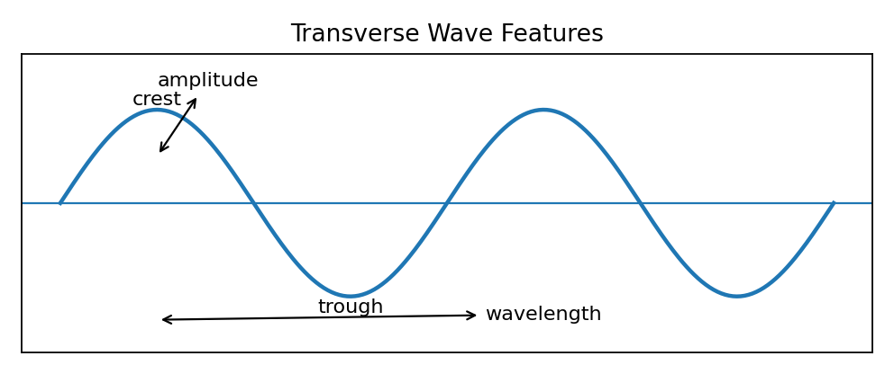
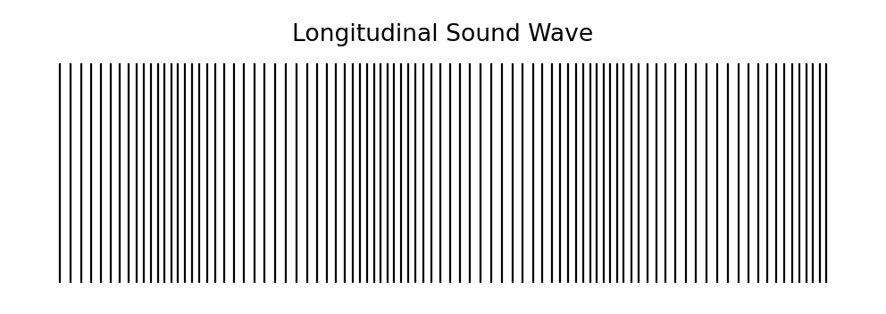

Label the crest, trough, amplitude, wavelength, and equilibrium line. Then explain which feature would change if the wave carried more energy but had the same wavelength.
Use the diagram to label amplitude and wavelength. Add one sentence explaining why wavelength is not the same as wave height.

Label a compression, rarefaction, and wavelength. Then explain why this model represents a longitudinal wave.
Mark the regions where coils are closest and farthest apart. Identify the feature that corresponds to wavelength.
Label one transverse feature and one longitudinal feature. Then compare what particles do in each wave type.
A student labels the distance from crest to trough as one wavelength. Critique the label and replace it with a correct explanation.